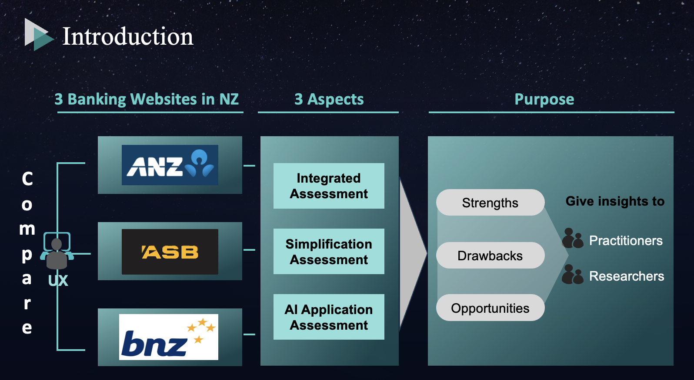

Project Type: University Research
Description: Evaluated user experience of ANZ, BNZ, and ASB websites using PCA and correlation analysis.
Technologies Used: Python (PCA, Correlation)
Outcome: Identified key usability differentiators among NZ's top banking sites.